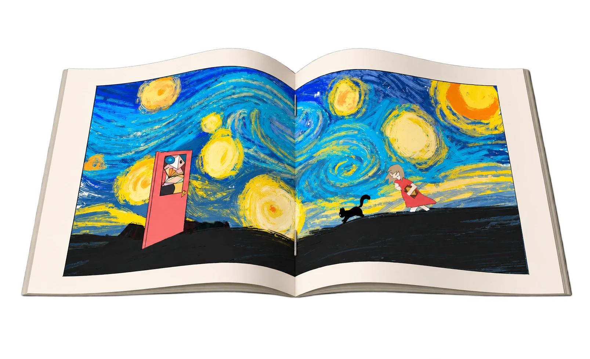
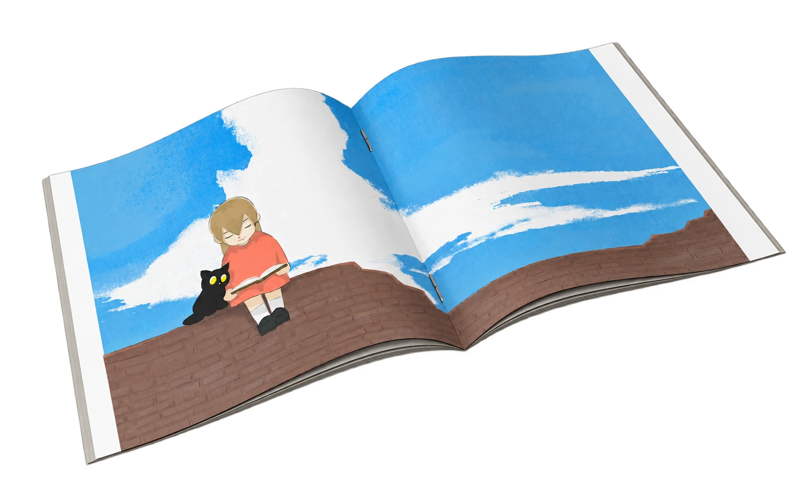
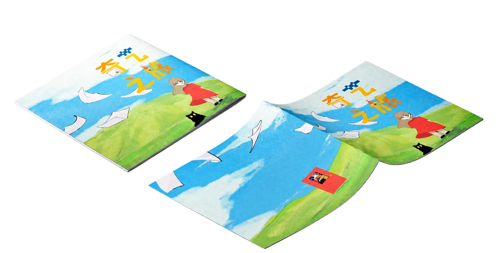
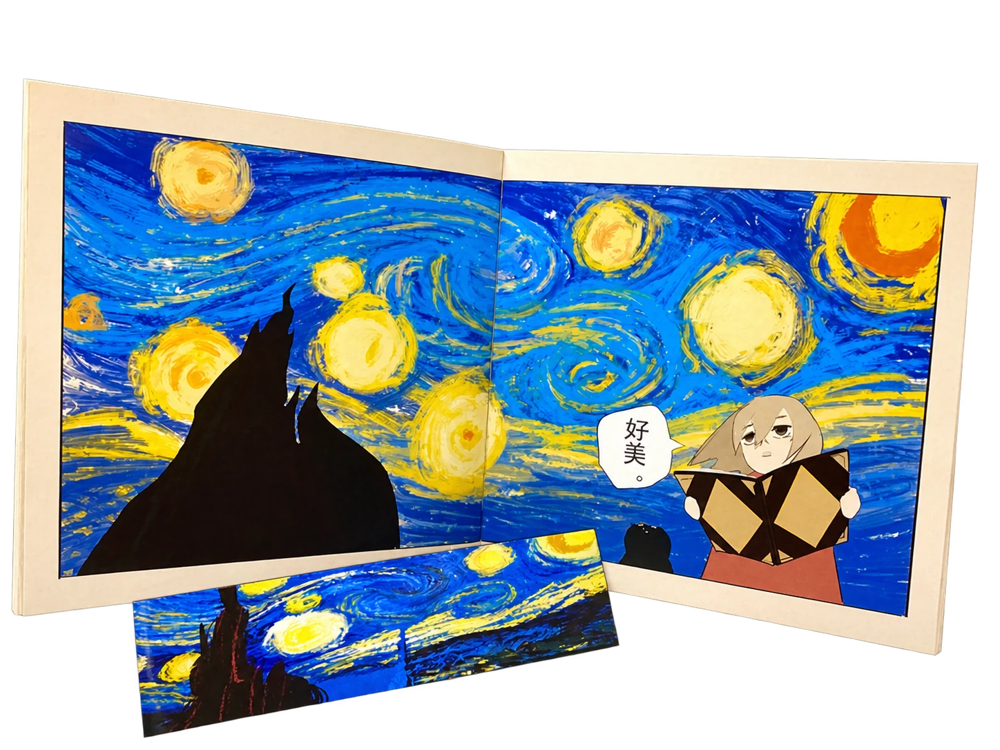
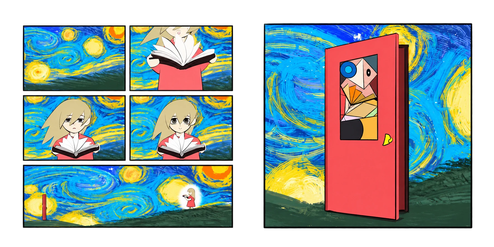
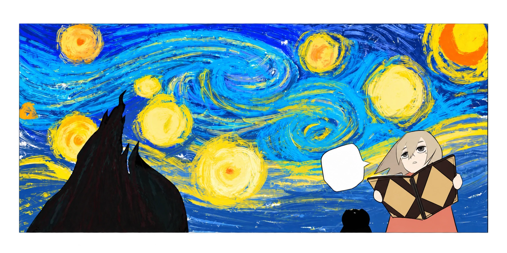
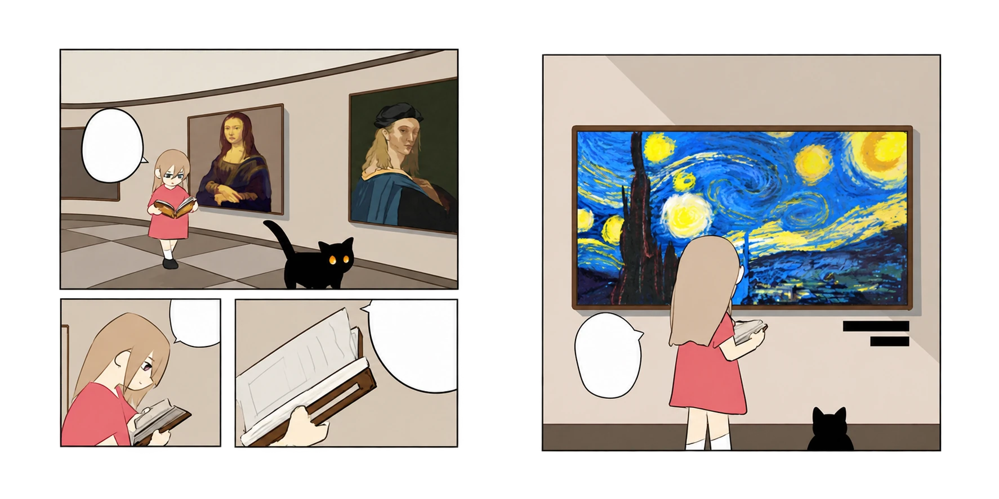
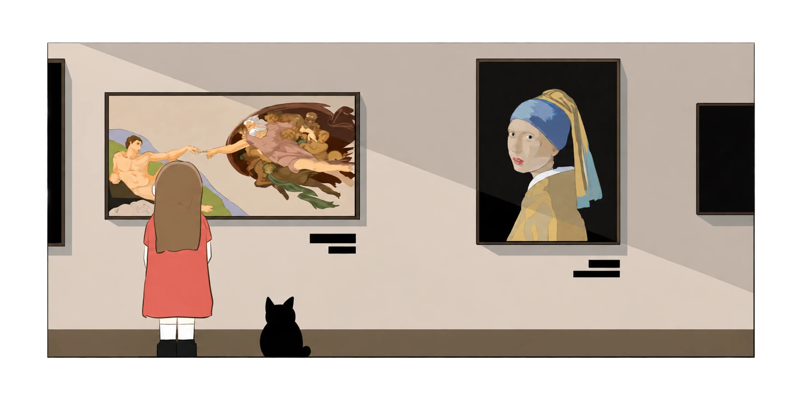
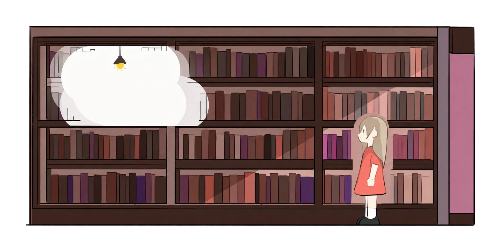

PROJECT DETAIL / 06
奇艺
之旅
WONDER JOURNEY · BOOK DESIGN
主题 / THEME
儿童艺术冒险绘本 / 书籍设计
作者 / AUTHOR
钟锡汉 ZHONGXIHAN
项目说明 / DESCRIPTION
以小女孩京的艺术时空冒险为线索，将艺术史知识融入绘本叙事，回应创作瓶颈中重新寻找绘画热爱的过程。
儿童艺术冒险绘本 / 书籍设计
钟锡汉 ZHONGXIHAN
以小女孩京的艺术时空冒险为线索，将艺术史知识融入绘本叙事，回应创作瓶颈中重新寻找绘画热爱的过程。
《奇艺之旅》讲述小女孩京因绘画瓶颈而想放弃画画，意外捡到神秘书籍后，穿越至文艺复兴、印象派和立体主义等艺术时期。在冒险与学习中，她找回信心，重新拿起画笔。
项目来自书籍设计课程，也与作者自身的创作迷茫相联系。以京的视角引导读者接触艺术史，同时表达“画画最重要的是热爱画画的心”。
先确定时空冒险的基础剧情，再围绕整体设定、剧情和环境展开构思。京的早期形象为黑色短发、蓝色裙子与爱心发夹，后期改为黄色长发、红色裙子和泪痣，保留名为雪球的小黑猫。
早期设计包含大图书馆与麦田，后期删去大图书馆，将书架放回家中，并以星空和草地替换麦田。分镜最初以大跨页为主，后期改用漫画格推进剧情，以大跨页展开环境描写。
PPT 展示了四版封面的迭代，以及分镜和成稿对照。创作过程中查阅不同艺术时期的名画，参考其色彩搭配与构图，将艺术场景融入京的冒险。
课程实践涵盖开本、白书、版心、样章、字体字号测试和成书装订。成品采用骑马订与 200 克铜版纸。
成品尺寸：220 × 220 mm。
通过时空穿越让读者跟随京接触艺术作品与创作理念。文艺复兴阶段关注自然和人性的刻画，后续场景探索光影、色彩与几何化表达，让艺术风格参与环境叙事。
漫画格承接人物行动和对话，大跨页提供观察环境的空间。京从迷茫到重新拾起画笔的变化贯穿故事，使知识内容与创作情感相互呼应。
问题：绘本需要同时处理剧情、对话、分镜与人物，实际难度超出最初预期。调整：确立京的创作瓶颈与寻找信心这一动机，并将分镜调整为漫画格推进剧情、跨页描写环境。
问题：前期不断变更主题，后期只剩一个多星期，出现明显赶工。应对：压缩内容，课程总结记录页数从二十多页删减为十四页，以完成第一本绘本为阶段目标。
作者在课程总结中指出，成品仍存在场景转换突兀、开场铺垫不足、剧情不够清楚和色彩混乱等问题。这些是尚待改进的部分，不能写成已经解决。后续应更早确定主题与分镜，并预留叙事检查和统一配色的时间。








